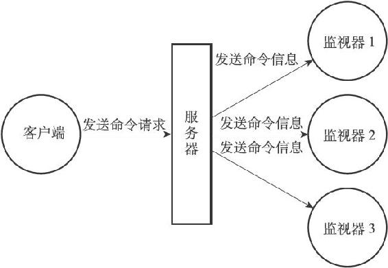

第24章 监视器
通过执行MONITOR命令，客户端可以将自己变为一个监视器，实时地接收并打印出服务器当前处理的命令请求的相关信息：
redis> MONITOR
OK
1378822099.421623 [0 127.0.0.1:56604] "PING"
1378822105.089572 [0 127.0.0.1:56604] "SET" "msg" "hello world"
1378822109.036925 [0 127.0.0.1:56604] "SET" "number" "123"
1378822140.649496 [0 127.0.0.1:56604] "SADD" "fruits" "Apple" "Banana" "Cherry"
1378822154.117160 [0 127.0.0.1:56604] "EXPIRE" "msg" "10086"
1378822257.329412 [0 127.0.0.1:56604] "KEYS" "*"
1378822258.690131 [0 127.0.0.1:56604] "DBSIZE"
每当一个客户端向服务器发送一条命令请求时，服务器除了会处理这条命令请求之外，还会将关于这条命令请求的信息发送给所有监视器，如图24-1所示。

图24-1 命令的接收和信息的发送